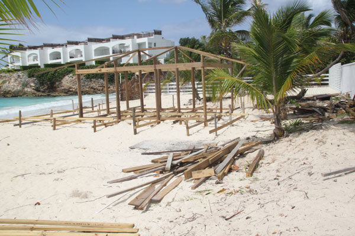

Незаконното строителство е строителна работа без валидно разрешение за строеж. Освен потенциалните технически опасности на неконтролирани строителни обекти и в завършени сгради, незаконната строителна дейност може да бъде сериозно екологично нарушение, когато строителните работи посягат на защитени територии като природните резервати.
В нашата държава има доста опити за незаколно строителство особено около плажните ивици на Черно море. Тези сгради (постройки) биват събаряни и махани от мястото на строителство, тъй като нарушават закона.
За да се предотвратят опитите за незаконно строителство, гражданите излизат на протести.
Всяка година биват убивани около 150 милиарда животни.